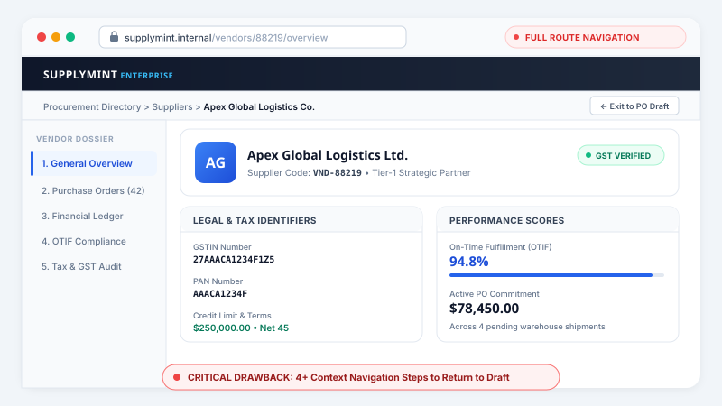
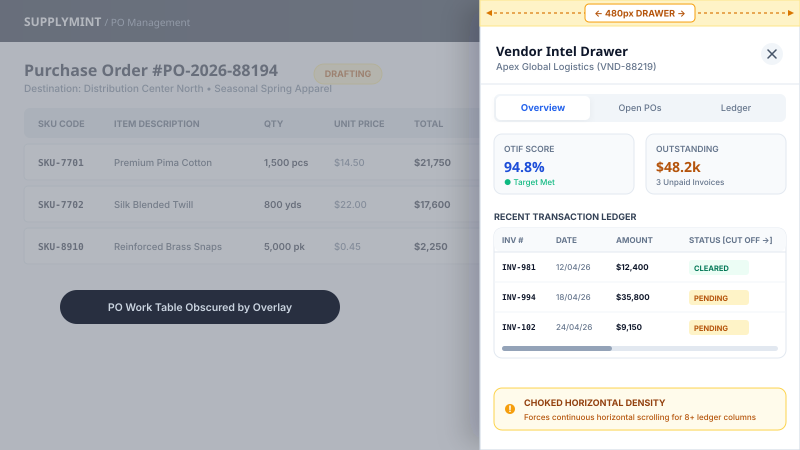

Identifying Core Procurement Bottlenecks
Contextual in-situ observation and workflow audits across retail procurement desks revealed four systemic friction vectors that devoured over 35% of planner bandwidth before a single purchase order could be committed.
Picking the right vendor, quickly
Planners manually cross-reference supplier lead times across disconnected Excel spreadsheets, causing fulfillment delays of several hours per cycle.
Fragmented vendor details across ERPs
Crucial vendor data was dispersed across isolated ERP screens. Planners kept 6+ browser tabs open simply to verify contact details, bank accounts, or ledger history.
No vendor reliability context at decision time
During PO generation, buyers lacked live OTIF (On-Time, In-Full) reliability metrics and outstanding payable status, making risk mitigation impossible prior to commitment.
Manual vendor identity & tax validation
Verifying supplier credentials like tax IDs (GST/PAN) and active bank accounts was slow and manual, frequently blocking Input Tax Credits (ITC) during audits.
“I have to keep 6 browser tabs open just to verify whether a supplier delivered on time before signing off on a $50,000 order.”
Pooja S.
PlannerSenior Retail Procurement Lead • Processes 150+ POs/month
“Disjointed tax credentials caused repeated blocked input tax credits during GST audits because buyers placed orders with suspended suppliers.”
Rajiv M.
ControllerEnterprise Finance & Tax Controller • $12M Annual Procurement
Average Retailer PO Creation Calendar Load
Empirical drag experienced by retail planners across a standard 31-day seasonal replenishment cycle.
35%
Of monthly buyer calendar lost to legacy screen toggling
6+ Tabs
Simultaneously opened to verify single vendor details
+25 min
Manual lead-time lookup latency per purchase order

Strategic Design Goals
Core objectives established with enterprise stakeholders to transform procurement decision latency and eliminate vendor friction.
Eliminating manual screen toggling & cognitive drag
Technical & Practical Constraints
Key architectural guardrails and enterprise system limitations shaping the solution.
Enhance, don't disrupt
The new module must fit seamlessly into the existing Supplymint SaaS ecosystem, ensuring zero workflow disruption for active enterprise clients.
Universal Accessibility
All vendor intelligence telemetry must be available at the click of a button from any screen in the platform.
Utilize existing data only
The dashboard must operate using already-collected transaction history, without requiring additional vendor input.
Lightweight interfaces
Front-end layouts must be lightweight and easy to navigate for users on low-bandwidth warehouse connections.
User Discoveries & Behavioral Logs
Through contextual inquiry with 15+ procurement leads and telemetry analysis across 1,200+ user sessions, we isolated three critical friction patterns:
Volume Changes Behavior
Telemetry LogPlanners managing 10+ suppliers require high-density aggregate scorecards, whereas single-vendor buyers need line-item transaction ledgers.
Rate Visibility Gap
Behavioral FrictionBuyers routinely committed purchase orders without validating active contract rate-cards, triggering post-facto billing disputes with finance.
Tax Validation Overhead
Compliance AuditManual cross-checks of GSTIN/PAN status across governmental portals caused tax invoice halts and blocked corporate input tax credits.
Navigation Session Analysis

"I kept two monitors open just to copy-paste vendor tax credentials and check whether their prior shipment was delayed before issuing a new $50K PO."
— Sneha K., Central Replenishment OfficerArchitectural Exploration & Trade-off Matrix
Before converging on the final in-situ modal pattern, we evaluated interaction architectures across structural options—testing full-page routes and side drawers before establishing the balanced, centralized modal architecture.

Dedicated Standalone Pages
Opening supplier details in separate browser routes (/vendors/:id) with standard layout headers and sub-navigation.

Collapsible Side Drawer
A 480px slide-out drawer anchoring to the right viewport edge while maintaining partial view of the underlying creation table.
Centralized 360° Modal with Deep Tabs
A focal, 1140px in-situ dialog summoned instantly via context clicks from any screen, housing 3 specialized operational telemetry tabs.
Zero workspace departure. A balanced, central, and deeply contextual enclosure offering calm focus with full uncommitted state preservation.

A Unified Vendor 360° View Modal
Our solution consolidated all order states, outstanding payables, OTIF rates, and onboarding credentials into a single, tabbed modal. Instead of navigating away, users click any supplier's name in data grids or global search to summon the modal instantly.
Operational Snapshot
Consolidates supplier ratings, onboarding status, PO status breakdown, OTIF, and fulfillment scores, alongside core legal credentials (GSTIN, PAN, Aadhaar, verified warehouse address).
CONTEXTUAL INTEGRITY
The darkened backdrop retains background orientation so users never lose place in complex multi-item POs.
UNIVERSAL SUMMONING
Callable anywhere supplier text appears: in tables, search results, dropdown selectors, and approval queues.
INFORMATION DENSITY
Supports rich multi-column ledger tables, fulfillment radial gauges, and legal tax credentials on one plane.
Architectural Impact
Each tab directly addresses the operational gaps identified during research: Overview solves fragmented identity; Open PO and Purchase Ledger solve decision-time latency. Triggering it universally—directly from data grids—respects existing workflows without causing disruptive navigation context switches.
The result: Retailers never leave their tools to evaluate vendors. Decisions and transaction data exist in the exact same workspace.
Validated Impact & Enterprise Adoption
Following deployment across Supplymint's enterprise retail clients, system telemetry and time-motion audits demonstrated decisive improvements in order velocity, error reduction, and planner satisfaction.
Faster Order Cycles
PO generation dropped from 14.2 min baseline to 8.5 min average per order batch.
Tab Reduction
Virtually eliminated concurrent browser tab hopping between ledger and order screens.
Tax Audit Clearance
Upfront automated credential audits prevented blocked input tax credits across all enterprise audits.
Planner CSAT Rating
Measured across 100+ active enterprise retail buyers, praising the modal as indispensable.
Ambient Intelligence Beats Separate Dashboards
In enterprise B2B workflows, intelligence cannot be an isolated dashboard that users visit when convenient. It must be ambient—surfacing precisely when a buyer is making high-stakes allocation commitments. Designing in-situ intelligence eliminates the cognitive friction of manual analytical lookup.
Respecting Workspace Spatial Memory
By utilizing an in-situ modal overlay with a softened translucent backdrop rather than a full-page routing navigation, we preserved the planner's spatial memory. Users retained absolute psychological certainty that their active work-in-progress, cart items, and draft lines remained completely intact.